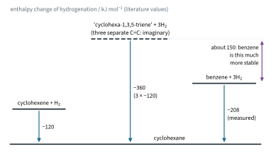
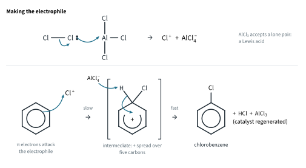
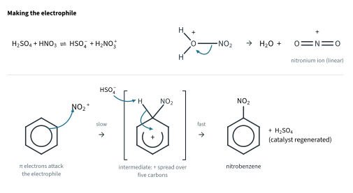
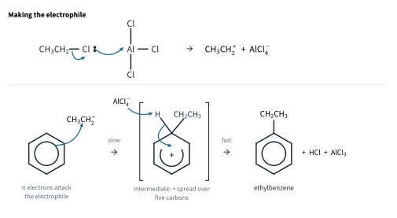
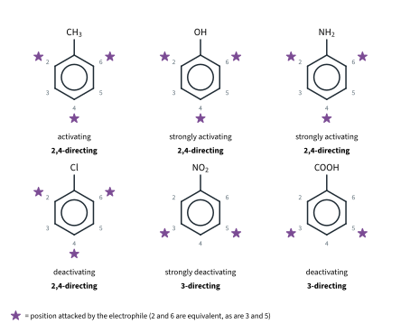
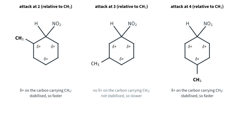
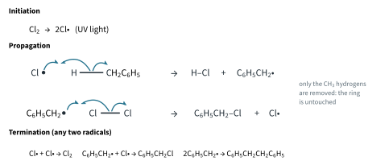
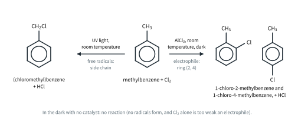
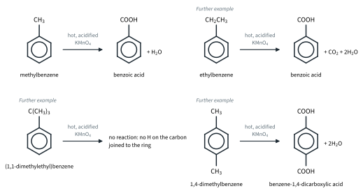
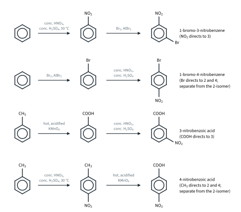

Hydrocarbons 2
Topic 11.4 · Hydrocarbons Part 2
On this page
Benzene and methylbenzene
The arenes are hydrocarbons containing a benzene ring. 9476 uses two examples: benzene, C6H6, and methylbenzene, C6H5CH3. Both are colourless liquids at room temperature (b.p. 80 °C and 111 °C, literature values). Benzene is carcinogenic, so school laboratories use methylbenzene instead.1
You met the structure of benzene in Topic 11.1. Each carbon is sp2 hybridised; the molecule is a flat regular hexagon with all bond angles 120°; all six C–C bonds are the same length, 0.139 nm, between C–C (0.154 nm) and C=C (0.134 nm) (literature values); and the six unhybridised p orbitals overlap all round the ring, so that 6 π electrons are delocalised above and below the plane. That is why it is drawn as a hexagon with a circle.
This delocalised π system explains almost everything about the chemistry of benzene (9476 11.4, "the influence of delocalised π electrons on structure and properties"):
- It resists addition. Adding across one of the ring bonds would destroy the delocalised system for good, and lose its extra stability. Instead benzene reacts by substitution: an H atom is replaced, and the delocalised ring is kept.
- It is less reactive towards electrophiles than an alkene. Its π electron density is spread over six carbons, not concentrated between two, and attacking the ring means partly losing the delocalisation. So benzene does not decolourise bromine water, and it needs a catalyst that turns the reagent into a much stronger electrophile.
- It is not oxidised by KMnO4, even hot. And when a side chain on the ring is oxidised (later in this Part), the ring itself comes through unchanged.

Electrophilic substitution
All three ring reactions in 9476 11.4(d) follow the two-step pattern of Topic 11.3 (Fig 8 there, the bromination of benzene):
- Step 1 (slow). Two of the π electrons attack the electrophile, E+, and form a C–E bond. The carbon that now carries both H and E is sp3. The ring has lost part of its delocalisation: four π electrons are left, spread over the other five carbons, with the positive charge.
- Step 2 (fast). A base removes H+ from the sp3 carbon, and the two electrons of the C–H bond return to the ring, restoring the full delocalised system.
So the reactions differ only in how the electrophile is made:
Halogenation of the ring
Benzene does not react with chlorine or bromine on its own. With a catalyst of anhydrous aluminium chloride (or aluminium bromide for bromine), at room temperature, it is substituted:
C6H6 + Cl2 → C6H5Cl + HCl (Cl2, AlCl3 catalyst, room temperature)
C6H6 + Br2 → C6H5Br + HBr (Br2, AlBr3 catalyst, room temperature)
With bromine, the red-brown colour fades and misty fumes of HBr are given off. The aluminium halide is a halogen carrier. Its aluminium atom has only six outer electrons (Topic 5 Part 2), so it is a Lewis acid, an electron-pair acceptor (Topic 4 Part 1). It accepts a lone pair from one atom of the halogen molecule, the X–X bond breaks heterolytically, and the electrophile X+ is left:2
Cl2 + AlCl3 → Cl+ + AlCl4−

In step 2, AlCl4− takes the H+, giving HCl and giving back the catalyst: AlCl4− + H+ → AlCl3 + HCl. FeCl3 or FeBr3 (or Fe filings, which react with the halogen to form them) does the same job; FeBr3 was the catalyst in the Topic 11.3 example.
The reagents must be dry. Water hydrolyses aluminium chloride, giving steamy fumes of HCl (Topic 5 Part 2), and the catalyst is destroyed.
Methylbenzene reacts in the same way (faster), and gives a mixture of 1-chloro-2-methylbenzene and 1-chloro-4-methylbenzene. Why these two positions is explained below.
Nitration
Benzene is nitrated by a mixture of concentrated nitric acid and concentrated sulfuric acid at 50 °C:
C6H6 + HNO3 → C6H5NO2 + H2O (concentrated HNO3 and concentrated H2SO4, 50 °C)
The product, nitrobenzene, is a pale yellow oily liquid, denser than water. (It is the starting point for phenylamine, Topic 11.9.)
The electrophile is the nitronium ion, NO2+. You met the first step in Topic 4: sulfuric acid is the stronger acid, and protonates nitric acid, which is acting as a base:
H2SO4 + HNO3 ⇌ HSO4− + H2NO3+
The protonated nitric acid then loses a water molecule, and the water is protonated by more sulfuric acid:
H2NO3+ → NO2+ + H2O H2O + H2SO4 → H3O+ + HSO4−
Overall: HNO3 + 2H2SO4 → NO2+ + H3O+ + 2HSO4−

Concentrated sulfuric acid is a Brønsted-Lowry acid catalyst: it donates the proton that turns HNO3 into NO2+, and it is regenerated in step 2, when HSO4− removes H+ from the intermediate. (Further example: NO2+ is linear, like CO2, which has the same number of electrons; the N has two bonding regions and no lone pair, VSEPR, Topic 2 Part 2.)
Alkylation of the ring
Friedel-Crafts alkylation
A halogenoalkane with anhydrous aluminium chloride puts an alkyl group on the ring, making a new C–C bond. With chloroethane:
C6H6 + CH3CH2Cl → C6H5CH2CH3 + HCl (CH3CH2Cl, AlCl3 catalyst)
The product is ethylbenzene. Chloromethane gives methylbenzene in the same way, and a bromoalkane can be used with AlBr3. The AlCl3 again acts as a Lewis acid, taking the chlorine (with its electrons) from the halogenoalkane to leave the electrophile, a carbocation:3
CH3CH2Cl + AlCl3 → CH3CH2+ + AlCl4−

There is a catch. The alkyl group makes the ring more reactive (see below), so the ethylbenzene formed reacts faster than the benzene it came from, and some diethylbenzenes and triethylbenzenes form: polyalkylation. A large excess of benzene keeps it down.4
Where the second group goes
When a monosubstituted benzene, C6H5X, is substituted again, the new group does not go just anywhere. Number the ring from the carbon carrying X (carbon 1): the new group goes either to positions 2 and 4 (2 and 6 are the same) or to position 3 (3 and 5 are the same).5 Which one depends on X, and X also decides whether the ring reacts faster or slower than benzene:
| Group on the ring | Example | Rate compared with benzene (Further example) | Directs to | Why (in one line) |
|---|---|---|---|---|
| –CH3 (any alkyl) | methylbenzene | faster (activating) | 2 and 4 | electron-donating (inductive effect) |
| –OH | phenol | much faster (strongly activating) | 2 and 4 | a lone pair on O is delocalised into the ring |
| –NH2 | phenylamine | much faster (strongly activating) | 2 and 4 | a lone pair on N is delocalised into the ring |
| –Cl, –Br | chlorobenzene | slower (deactivating) | 2 and 4 | electronegative, so it withdraws; but its lone pair directs to 2 and 4 |
| –NO2 | nitrobenzene | much slower (strongly deactivating) | 3 | electron-withdrawing |
| –COOH | benzoic acid | slower (deactivating) | 3 | electron-withdrawing (the C=O) |
| –CHO, –COR, –CN (Further example) | slower (deactivating) | 3 | electron-withdrawing |

A 2,4-directing group gives a mixture of the 2- and the 4-isomer (two products), which then have to be separated; a 3-directing group gives mainly one product. Activation shows in the conditions: methylbenzene is nitrated at 30 °C, benzene at 50 °C, and nitrobenzene needs a higher temperature still. Phenol and phenylamine are so strongly activated that they react with bromine water with no catalyst at all, and all three of the 2-, 4- and 6-positions are substituted (Topic 11.6 Part 2 and Topic 11.9).

Worked example 6
Give the main product(s) of: (a) the nitration of chlorobenzene; (b) nitrobenzene with Br2 and AlBr3; (c) benzoic acid with Cl2 and AlCl3; (d) the nitration of methylbenzene.
(First decide what the group already on the ring does, then put the new group there.)
(a) Cl directs to 2 and 4: 1-chloro-2-nitrobenzene and 1-chloro-4-nitrobenzene.
(b) NO2 directs to 3: 1-bromo-3-nitrobenzene.
(c) COOH directs to 3: 3-chlorobenzoic acid.
(d) CH3 directs to 2 and 4 (at 30 °C): 1-methyl-2-nitrobenzene and 1-methyl-4-nitrobenzene.
Reactions of the side-chain
Methylbenzene has two parts that can react: the ring and the CH3 side chain. The side chain behaves much like an alkane, with one difference: it is attached to a benzene ring.
Free-radical substitution
In UV light at room temperature, chlorine substitutes the hydrogens of the CH3 group, not the ring:
C6H5CH3 + Cl2 → C6H5CH2Cl + HCl (Cl2, UV light, room temperature)
The product is (chloromethyl)benzene. With more chlorine, the other two side-chain hydrogens are replaced in turn, giving (dichloromethyl)benzene, C6H5CHCl2, and (trichloromethyl)benzene, C6H5CCl3. Bromine reacts in the same way, giving (bromomethyl)benzene, C6H5CH2Br. The colour of the halogen fades and misty fumes of HCl or HBr form. The mechanism is the free-radical substitution of ethane (Part 1), with C6H5CH2• as the carbon radical (Fig 7).

Why the side chain? A Cl• radical removes the H atom that is easiest to take. The C–H bonds of the CH3 group are weaker than those of the ring, because the radical left behind, C6H5CH2•, is stabilised: its unpaired electron is partly delocalised into the ring (Enrichment).6 Removing a ring H would gain no such help.
Side-chain or ring?
So methylbenzene and chlorine can give completely different products, and the conditions decide which (9476 11.4(f)):

| Conditions | Where | Mechanism | Products |
|---|---|---|---|
| UV light, room temperature, no catalyst | side chain (CH3) | free-radical substitution | (chloromethyl)benzene + HCl; with more Cl2, (dichloromethyl)- and (trichloromethyl)benzene |
| AlCl3 catalyst, room temperature, in the dark (dry reagents) | ring (positions 2 and 4) | electrophilic substitution | 1-chloro-2-methylbenzene + 1-chloro-4-methylbenzene + HCl |
| dark, no catalyst | no reaction | (no radicals; Cl2 alone is too weak an electrophile) |
Worked example 7
State the reagents and conditions to make, from methylbenzene: (a) (bromomethyl)benzene; (b) 1-bromo-4-methylbenzene; (c) (trichloromethyl)benzene.
(a) Br2, UV light, room temperature (substitution in the side chain).
(b) Br2, AlBr3 catalyst, room temperature, in the dark, with dry reagents (substitution in the ring); separate it from the 2-isomer.
(c) Excess Cl2, UV light, room temperature: all three side-chain hydrogens are replaced.
Oxidation of the side-chain
Hot potassium manganate(VII) oxidises the CH3 group all the way to a carboxylic acid, benzoic acid, but leaves the ring alone:
C6H5CH3 + 3[O] → C6H5COOH + H2O
9476 names two ways of doing it:
- Hot, alkaline KMnO4, then dilute acid. Heat under reflux with KMnO4 in NaOH(aq), then add dilute H2SO4. The purple colour fades and a brown precipitate of MnO2 forms. In alkali the product is the soluble benzoate ion; after filtering off the MnO2, dilute acid is added and benzoic acid comes out as a white precipitate, because it is only sparingly soluble in cold water (about 3.4 g dm−3 at 25 °C, literature value): C6H5COO−(aq) + H+(aq) → C6H5COOH(s).
- Hot, acidified KMnO4 (heat under reflux). The purple colour is decolourised (Mn2+ forms) and benzoic acid crystallises on cooling.
(Further example: the ionic equations are C6H5CH3(l) + 2MnO4−(aq) → C6H5COO−(aq) + 2MnO2(s) + OH−(aq) + H2O(l) in alkali, and 5C6H5CH3(l) + 6MnO4−(aq) + 18H+(aq) → 5C6H5COOH(s) + 6Mn2+(aq) + 14H2O(l) in acid.)
The ring survives, which shows once more how stable the delocalised system is. (Further example.) In fact any alkyl side chain is cut back to –COOH, however long it is, as long as the carbon joined to the ring carries at least one H atom (Fig 9).

Benzoic acid is a weak acid (Ka 6.3 × 10−5 mol dm−3, Topic 10 Part 1); its reactions are in Topic 11.8 Part 1.
Planning a synthesis: the order of steps
Because the group already on the ring decides where the next one goes, the order in which you do two reactions decides which isomer you get.
Worked example 8
Suggest two-step routes, with reagents and conditions, for (a) benzene to 1-bromo-3-nitrobenzene, (b) benzene to 1-bromo-4-nitrobenzene, (c) methylbenzene to 3-nitrobenzoic acid, (d) methylbenzene to 4-nitrobenzoic acid.
(Ask which group must be on the ring first to send the second group to the right place.)
(a) The groups are 1,3, so a 3-director must go on first: nitrate (concentrated HNO3 and H2SO4, 50 °C), then brominate (Br2, AlBr3).
(b) The groups are 1,4, so the 2,4-director, Br, goes on first: Br2, AlBr3; then nitrate; separate the 4-isomer from the 2-isomer.
(c) Oxidise first (hot, acidified KMnO4) to benzoic acid; COOH directs to 3; then nitrate.
(d) Nitrate first at 30 °C (CH3 directs to 2 and 4) and separate the 4-isomer; then oxidise the CH3 with hot, acidified KMnO4. The NO2 group is unaffected.

Summary
| Reaction | Reagents and conditions | Attacking species | Product (from benzene, or as stated) |
|---|---|---|---|
| Chlorination of the ring | Cl2, AlCl3 catalyst, room temperature | Cl+ | chlorobenzene + HCl |
| Bromination of the ring | Br2, AlBr3 catalyst, room temperature | Br+ | bromobenzene + HBr |
| Nitration | concentrated HNO3 and concentrated H2SO4; 50 °C (benzene), 30 °C (methylbenzene) | NO2+ | nitrobenzene + H2O |
| Friedel-Crafts alkylation | halogenoalkane (e.g. CH3CH2Cl), AlCl3 catalyst | R+ | alkylbenzene (e.g. ethylbenzene) + HCl |
| Side-chain halogenation | Cl2 or Br2, UV light, room temperature | Cl• or Br• | from methylbenzene: (chloromethyl)benzene, (bromomethyl)benzene |
| Side-chain oxidation | hot, acidified KMnO4; or hot, alkaline KMnO4, then dilute acid | (not required) | from methylbenzene: benzoic acid |
Additional information
- Methylbenzene is often called by its older name, toluene. Both come mainly from crude oil. ↩
- Beyond the syllabus: a free Cl+ ion probably never forms; the electrophile is a strongly polarised Cl–Cl–AlCl3 complex. Writing Cl+ is the usual shorthand, and the mechanism is the same. ↩
- Beyond the syllabus: with 1-chloropropane the main product is (1-methylethyl)benzene, not propylbenzene, because the primary carbocation rearranges to the more stable secondary one. Friedel-Crafts reactions also fail on strongly deactivated rings such as nitrobenzene. ↩
- The large excess of benzene makes it far more likely that an ethyl cation meets a benzene molecule than an ethylbenzene molecule: the same idea as the excess of ethane in free-radical substitution (Part 1). ↩
- Older names, still common in textbooks: the 2-position is ortho, the 3-position meta and the 4-position para. ↩
- Beyond the syllabus: the C–H bond energies are about 375 kJ mol−1 in the CH3 of methylbenzene and about 470 kJ mol−1 on the ring (literature values; the Data Booklet gives only an average C–H value, 410 kJ mol−1). ↩